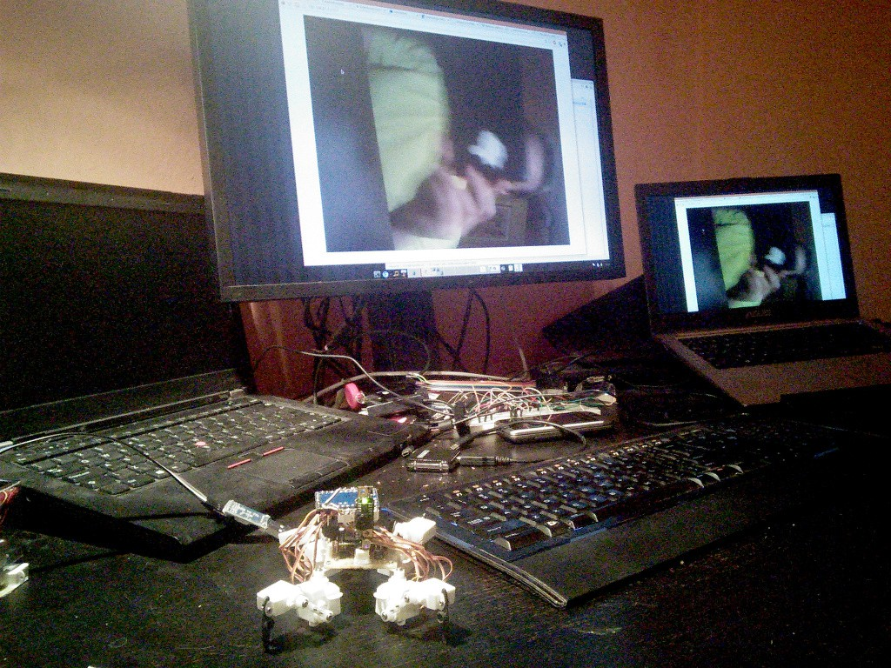
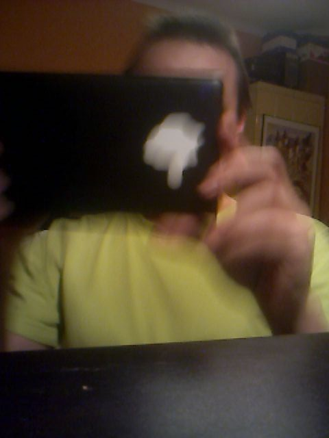
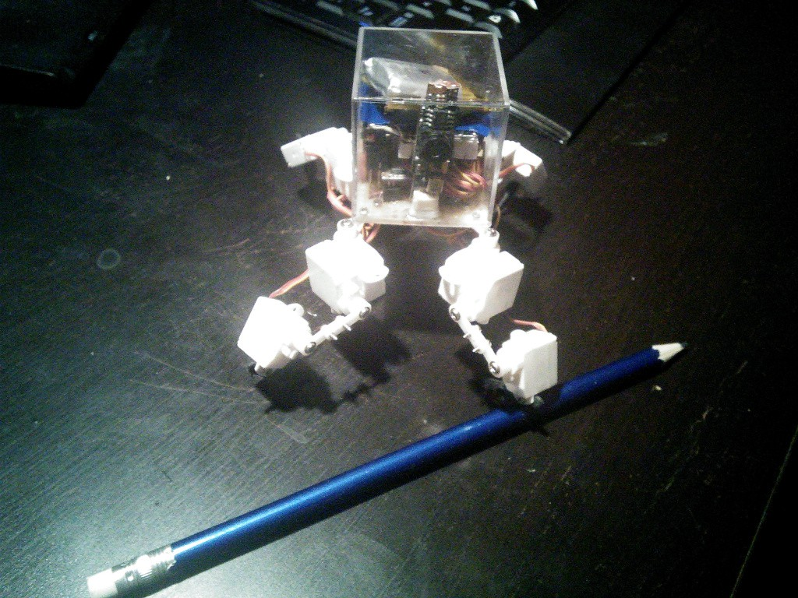

Camera Works!¶
Published on 2015-01-08 in Pico-Kubik quadruped robot.
Finally, I got the streaming from camera to work! Look:
The video is rotated by 90° and quite slow, but that’s details that I can handle. The trick was to use an older version of mjpeg-streamer that doesn’t segfault in YUV mode.
I also worked on the physical body of the robot a little bit. Instead of a transparent piece of plastic with everything glued to it, I now have a prototype board with a bunch of sockets and all the wires connecting them. The VoCore, Arduino, camera and battery just plug into that. And the PCB is exactly the right size to serve as a lid for a transparent plastic box. I just have to shave a couple of mm off the top of the camera module…
